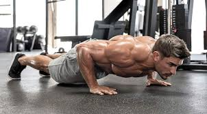

Bodyweight Training
Bodyweight exercises are strength training exercises that use the individual's own weight to provide resistance against gravity. Bodyweight exercises can enhance a range of biomotor abilities including strength, power, endurance, speed, flexibility, coordination and balance. This type of strength training has grown in popularity for both recreational and professional athletes. Bodyweight training utilises simple abilities such as pushing, pulling, squatting, bending, twisting and balancing. Movements such as the push-up, the pull-up, and the sit-up are some of the most common bodyweight exercises.
You can read more about bodyweight training here
